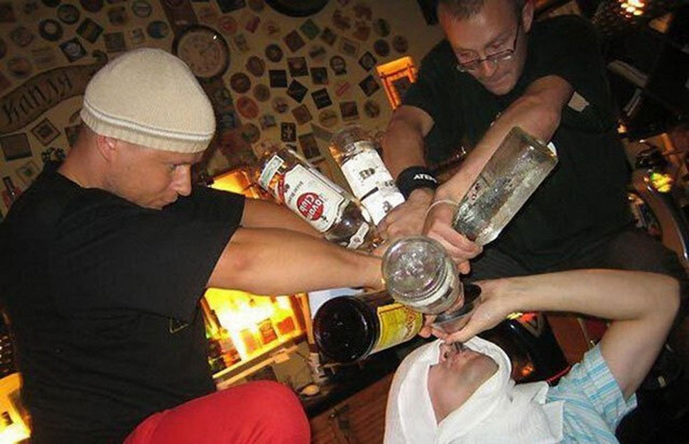
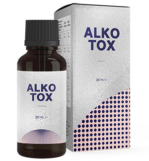

Ca și doctor narcolog, confirm că de băut se poate lăsa oricine
Mai bine de 20 de ani am lucrat ca narcolog într-o clinică mare. În toată perioada mea de practică, am reușit să ajut o mulțime de oameni să combată această dependență și să scape de ea. Multora le-am salvat viața, și niciodată nu mă gândeam că fiul meu va fi ca unul dintre aceștia. O perioadă îndelungată nu am putut să-l ajut prin metodele cunoscute de mine și aproape că-mi pierdusem speranța. Am reușit să găsesc o nouă metodă. Acum vreau să le povestesc tuturor cum pot să scape de dependență și să nu mai revină niciodată la alcool.

Uitându-mă în urmă, văd cum clinica, pacienții, seminarele și congresele erau mai importante decât propria familie. Eram dedicat în totalitate altor persoane, uitând de viața mea. Probabil de aceea, fiul meu a devenit unul dintre pacienții mei – din cauza dorinței subconștiente de a fi mai aproape de mine. Greutățile din familie și neînțelegerile dintre cei apropiați reprezintă una dintre cauzele principale ale alcoolismului. Și numai după aceea vin și problemele legate de serviciu, bani, relații cu oamenii, anomalii psihologice și fiziologice.
Eu și soția mea am făcut totul, pentru a-i oferi fiului nostru o educație bună și o viață demnă. Numai acum înțeleg, că lui nu-i era îndeajunsă comunicarea cu mine. De aceea, el la colegiu a încercat băuturile spirtoase și nu a mai putut să se oprească. La început a reușit să ascundă problema cu alcoolul...
Îmi aduc aminte acea zi, când am fost sunat și mi s-au deschis ochii. Încă cu o jumătate de an în urmă, fiul meu fusese exmatriculat și începuse să bea zilnic. Mai departe situația se înrăutățea constant – l-a părăsit prietena, făcea scandaluri când era beat prin baruri, avea un comportament imoral și începuse chiar să aibă primele probleme cu legea. Iar eu nu știam de toate astea și nici nu-mi putea închipui...

În față ne așteptau doi ani de reabilitare dificilă. Am făcut totul ca să-l ajut. Fiul meu s-a tratat, și-a curățat sângele, a urmat niște cure de psihoterapie. După o perioadă am văzut îmbunătățiri considerabile. Dar după ce a fost externat, el s-a dus direct la bar. Cel mai îngrozitor lucru nu consta în batjocura oamenilor, precum că aș fi un narcolog prost și că nu pot să-mi tratez propriul fiu, dar în faptul că sunt neputincios în fața copilului meu, care în fiecare zi își distruge viața.
Cu timpul, psihologul ne-a ajutat să punem la punct relațiile noastre. Fiul meu a recunoscut că nu mai este supărat pe mine. Pur și simplu este peste puterile lui să se lase de băut. Ca și cum cineva îl forțează să facă asta, iar el nu se poate opri. Adică problema nu era psihologică, dar mai exact era o dependență fizică, pe care nu putea deloc să o elimine. Desigur că știam că se mai întâmplă și lucruri de-astea. Metodele tradiționale de tratament, care se practică în toată lumea, nu l-au ajutat… Și am început să caut altele, diferite complet de acestea.

La una dintre conferințele online, ultima prezentare a fost a unui doctor narcolog necunoscut pe subiectul care mă interesa direct pe mine. Un nou remediu, care arată date statistice exclusive legate de tratarea alcoolului, deja a fost inclus în terapiile țărilor vecine.

Așadar, ce am aflat. nu conține substanțe blocante, tranchilizante sau altele care pot fi dăunătoare. În compoziția sa intră extracte naturale, care își îndeplinesc funcțiile principale în terapia împotriva dependenței alcoolice:
- formează o reacție naturală de respingere a alcoolului;
- îmbunătățesc funcțiile de gândire și vorbire;
- elimină simptomele sindromului de abstinență;
- îmbunătățesc starea emoțională, îndepărtând semnele de agresiune și depresie;
- curăță sângele și vasele;
- elimină substanțele toxice din organism.
Mie, ca și specialist cu o vechime în muncă destul de mare, îmi era greu să cred în asta.La un asemenea efect nu se poate ajunge cu niciun remediu, ci doar printr-o muncă complexă. Dar pentru că am încercat toate metodele cunoscute de mine, care nu l-au ajutat pe fiul meu, am decis să-i dau .
Fiul meu băuse deja de două săptămâni. De dimineață, ca să-i elimin sindromul de mahmureală i-am dat . După o oră, el a făcut un duș și s-a dus să-și ia micul dejun. Pentru prima oară, după un timp îndelungat, el nu s-a mai simțit rău. Și bineînțeles, nu i-au mai tremurat mâinile, vocea era uniformă, iar pupilele erau și ele în stare normală. Niciun semn de mahmureală. El chiar glumea și zâmbea, de parcă ieri nici nu ar fi fost beat într-o baltă de vomă…

După două săptămâni de la administrarea acestui remediu, fiul nu a avut nicio ieșire sau criză, dar a urmat un stil de viață normal. După ce a făcut niște examinări și analize, am rămas șocat – toți indicatorii erau la normal, sângele era fără toxine și impurități. Și cel mai important este că nu mai bea. A ținut mult așa? Se pare că da.
După încă o săptămână, el a recunoscut, că nu credea că-l va ajuta acest nou remediu, dar a început să-l ia doar de dragul meu. Dar după aceea, pur și simplu a încetat să se mai gândească la faptul că mai vrea să mai bea. Au apărut gândurile pozitive, starea generală a devenit mult mai bună. Chiar a început să-și facă planuri pentru găsirea unui loc de muncă și revenirea la studii pentru anul următor.
A trecut o jumătate de an de când fiul meu a luat . În acest timp, el niciodată nu s-a mai întors la vechile obișnuite și a revenit la o viață complet normală. Acum îi ajut chiar și pe aceia care se considerau a fi pacienți fără vreo speranță. Am reușit să aranjez distribuirea produsului în țara noastră. Și chiar mai mult! Acum orice doritor îl poate comanda direct de pe site-ul producătorului, fără plată în avans sau taxe vamale.
Dacă dumneavoastră singur sau apropiații nu pot scăpa de dependență și a fost pierdută orice speranță… Să știți că există mereu o scăpare! Am și eu până nu demult în locul vostru, deși credeam, că din cauza specializării mele acest lucru nu se poate întâmpla. În viață au loc tot felul de chestii și împrejurări. Știu cât cheltuie oamenii pe reabilitare. În majoritatea cazurilor, asemenea sume mari de bani nu le au 85% dintre pacienți. Vreau să-i ajut pe toți, și fac cadou o reducere de 50% pentru . Achiziționând acest remediu, vă despărțiți pentru totdeauna de alcool.